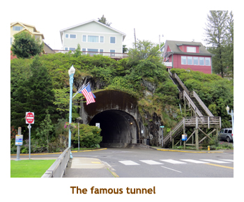
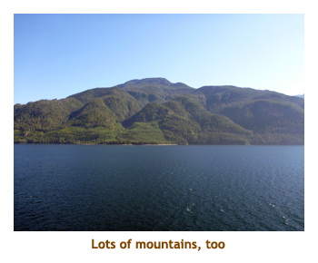

[ Home ] [ Travel ] [ Photography ] [ Pets ] [ Games] [ Rowing] [ Physics ]


Cruising on the Celebrity Millennium
Travel
Cruises
Past Cruises (Diaries)
Future Cruises
Rogues Galleries
Land Trips
Diaries (Land Trips)
Hawai'i - Big Island - 04'01
Hawai'i - Maui - 05'02
Hawai'i - Big Island - 04'03
Hawai'i - Kaua'i - 09'04
Hawai'i - Big Island - 04'06
Hawai'i - Maui - 04'06
Mainland China - 05'07
Phoenix, Arizona - 12'07
Greek Isles - 05'08
Hawai'i - Kaua'i - 09'08
Hawai'i - Big Island - 09'09
Hawai'i - Maui - 05'12
Hawai'i - Big Island - 04'13
Ireland - 08'13
Mexico - Cancun 11'13
France/Belgium/Lux 07'15
Hawai'i - Big Island - 05'17
England / Wales - 06'17
Hawai'i - Big Island - 09'19
Photography
Cameras
Underwater
Pets
Tara
Blackie
Whitey
Muffy
Ollie
Rusty
Fluffy
Rufus&Dufus
Games
Rowing
Physics
Rating (out of 5):
Ship  Food
Food  Service
Itinerary
Service
Itinerary
It had been 7 years since we last went to Alaska, so we decided it was time to visit there again. Marjorie found a Celebrity Millennium cruise that offered TA rates so we picked that one. The cruise had several positives other than the cruise itself - a chance to do the railroad from Anchorage to Seward, a new port (Icy Strait Point), and a chance to see a "Solsticized" Millennium class ship. We had done the Constellation (3 times) and the Infinity, but that was before the upgrades. The only nagging doubt about the cruise was that Chrissy was due Aug 8 or 9 (first grandchild!) and we would not be home until Aug 1. Should be lots of time!
The ship was wonderful. The upgrade had added 60 additional cabins (120 pax) but even with 2359 passengers aboard it didn't feel crowded. We tried the new Bistro on Five and it was a good as on the Solstice class. The reason I only gave 4 stars to the food (which was excellent) is because king crab is no longer offered, even on an Alaskan cruise! The internet was the best we have ever encountered. It was fairly quick and we didn't even consume all of our free 90 minutes each. The gym was newly refurbished with new equipment including both a Model D and a Model E Concept II rower.
The food was wonderful with the exception of no king crab. We did all dinners in the MDR as well as several breakfasts and lunches. At dinner we did our "nab a drink" trick ordering a free beer / wine at the Elite happy hour and carrying it down to the dining room. Suprisingly, this was a non-trivia cruise crowd. There were maybe 20 people max who showed up. Marjorie and I played as a team of two and sometimes one or two others would join us.
The weather was the poorest we have had in Alaska. In the past we have had many sunny, warm days (very lucky!!) but this time it was typical Alaska weather - cool and rainy. Folks doing a B2B with the previous sailing got a week of warm (70's) sunny days. We missed it by a week. This didn't dampen our spirits though.
Pre-cruise (Jul 24) - Traveling to Anchorage
Day 1 (Jul 25) - Boarding in Seward

As luck would have it, though, there was a busload of Celebrity passengers milling
around who had also been dropped off at this "wrong" station by an unknowing bus
driver. They were waiting for a bus to transfer them back to the airport. So, we joined
them and were bused back past our hotel and to the airport. Of course we were the only
ones with luggage as the others had yielded theirs at their hotel. At the airport the
staff took our luggage and put it in a corner. We had no idea how the luggage was being
shipped to Seward. They had cruise checkin booths set up in the
terminal so we got our room key right
there at the airport. The train was waiting for us and we had only a short wait to
board. As we boarded we looked back at our lonely bags and said good bye to them. The
train ride was lovely. It was overcast and a bit rainy, but that didn't really spoil
the view. We sat with a nice couple (Bob and Kathy) from Cincinatti. The train trip was
about 4 hours and we arrived in Seward at 5:00 PM.
At the ship we only needed to do security as we already had
our room keys, so boarding was very quick. We visited our cabin quickly (no bags had
been delivered yet) and
then went to dinner. Almost everyone was in their grubbies as not many bags had been
delivered yet. Forgetting about the fate of our bags, I had an excellent prime rib.
After dinner my small bag and Marjorie's
main bag were delivered (whew!) but not my main bag. The status of our final bag was explained
by our flashing cabin phone.There was a phone message that I
had to report to deck one for a further exploration of my bag. Oh dear, what now. There
were mobs of people there being stripped of booze and ulu knives. I think the item in my bag
was the long scissors in my toiletries bag. However the security guy couldn't find
anything bad in my bag so I was released unscathed. I had to drag my own bag back to
the cabin. We didn't do the entertainment and went to bed early.
Day 2 (Jul 26) - Cruising Hubbard Glacier
Today was a day at sea including a sailby of the Hubbard Glacier in the afternoon.
We were up at 7:30 to find that there was no hot water, and the cold water was brown! The
cabin steward said it was a plumbing problem and was affecting 3 decks. The problem
was fixed in a couple of hours. We checked out the special Elite breakfast lounge but
weren't impressed with the selection so we went to the MDR. Afterwards we went to the
future cruise desk to (what else!) book a Transatlantic cruise. Then Marjorie went to a
port lecture and I went to the gym. Our Cruise Critic get together was at 12:00 and we did
lunch in the MDR right after.We entered Yakatuk Bay around 2:00 and arrived at the
Hubbard Glacier
soon after. Because there weren't many ice chunks in the water, we were able to get within
1/2 mile of the glacier - the closest they had been this season. There were several loud
explosions of ice (calving) tumbling into the ocean. The temperature dropped way down
and I was wearing my mitts and toque. We left the bay about 4:00 PM and entered back
into the open water. It was formal night so I had rack of lamb for dinner. We skipped the
entertainment..
Day 3 (Jul 27) - Whale watching in Juneau
We woke up at 7:00 to a cloudy, rainy day. We had booked a mid-morning private tour with
Captain Larry who we had used before. We went up on deck to see us come into Juneau.
We had breakfast in the buffet and then went ashore to shop a bit. Marj wanted some wooden
"bear paw" salad servers. We were back on board by 10:30 to drop off our goodies and then headed
back ashore to our 11:00 whale watching tour. We were bused about 13 miles to Auke Bay where
the boat was docked. We were on the boat and leaving the harbour by 12:00. It was still cloudy with
some wind and rain. Our first treat was a pod of twenty or so orcas that put on a show for us. Some of them
had very large dorsal fins. Further out we came upon a group of ten or so humpback whales doing
bubble feeding. We really enjoyed the trip! We were bused back to town and were back to the ship
by 3:30. We were dropped off at a different dock (Island Princess) and had an enjoyable short
walk back to our own dock. It was even a bit sunny! Marjorie wandered some more around the town while
I went to the trivia. There were only a few people there and I played as a team of one. I finished
tied for second. For dinner I had roast turkey. The entertainment was a juggler who was excellent.
When we got back to our room we had a phone message waiting that we had won a tour of the
engine control room on the final sea day. Woohoo!
 |
Day 4 (Jul 28) - Dog mushing in Skagway
We woke up at 6:30 to another cool, cloudy, rainy day. (Back home in Calgary it was supposed to hit 37 today). The ship was already docked.We had breakfast in the buffet and then headed off to our 8:15 dog sledding excursion, booked through the ship. We drove about 15 miles out of town to a meadow at the base of a mountain. We walked across the marshy meadow and then boarded a Unimog to take us up a steep gravel road to the dog racing area high up the mountain side. There we boarded 6 passenger wheeled "sleds" and 16 dogs raced us several times around a 1/2 mile track (ie. dirt road). We drove back down the mountain to the base camp where we got a lecture on the Iditerod race, including an actual racing sled. Then we got to play with the puppies. They really encourage human interaction to socialize the puppies. Then it was back across the meadow, onto the bus and back to the ship by 12:00. We had lunch at the Bistro on 5 (crepes). Marjorie headed back into Skagway to walk around while I read for a while and then went to the gym. For dinner I had a lamb shank that was done like pulled pork. Very good! We skipped the entertainment.
Note: Having booked "anytime dining", we were seated each night
with different folks in the anytime dining area. However, this evening we
were seated at a table for 8 that was an overflow table from the fixed seating
area. There were 6 early dining folks and 2 empty chairs. We really enjoyed
this group and they asked us to join them for the rest of the evenings.
 |
|||
Day 5 (Jul 29) - First time to Icy Strait Point
We were up at 7:00 with nothing planned for the day. Once again it was cool and rainy.
This was our first visit to this port, which is really just an indian village. It was also the only
tender port of the trip. The highlights are the renovated cannery, the indian village and a
"one leg" zip-line that weighs in at 5300 feet (just over a mile). Considering it was $139 for
45 seconds of thrill we decided against the zip-line. After tendering over we wandered
through the cannery. There were some interesting craft stores and the museum was very
interesting. We walked along the beach to where the zip-liners were landing and watched
then for a bit. We did not take the shuttle bus to the indian village. Some people enjoyed
the village and some didn't. It depends if you enjoy other cultures or not, I guess. As it
was cool and drizzling, we tendered back to the ship for lunch. We read a bit after lunch
and then I headed to the gym. We attended a short Galapagos lecture at 4:00 and an Alaskan
natural history lecture at 4:30. The sun was out after the lecture - nice to see it! We read
for a bit and then met Bob and Kathy for dinner in the MDR (we did notify our fixed dining
compatriots that we had another appointment). I had braised spare ribs
which were delicious. The entertainment were a gymnastic couple
(Jocka and Maria) who had done a
contract with Cirque de Soleil. They did some awesome floor stuff and then some "silk"
manuevers. They were excellent. Some of the accompanying music was from
"Allegria", so I guess that was the C'd'S show that they had done.
Day 6 (Jul 30) - A day in Ketchikan
We got up at 7:00 to another cool, rainy day. That's Alaska! We had beento Ketchikan several times
before so this time we had nothing planned. We had breakfast in the MDR and then headed
off the ship to walk around the town. We had never walked the Creek Street area, so that's where we
headed. There were lots of interesting art and souvenir shops as well as some museums. Then
we walked into the main part of town and did a bit of shopping. I bought a jigsaw puzzle and
Marjorie bought a 15 cent 2015 calendar. I headed back onto the ship at 10:30 while Marjorie
did some more wandering around. On board, I went up to the gym. Marjorie arrived back on
board and we went to the buffet for lunch. A bit of sun came out so we disembarked again to
enjoy the waterfront. We walked past the famous tunnel and quite a ways along the wharfs and
piers. Having "done the town" we were back on the ship by 3:00 for some read time. We went
to trivia at 4:00 and won some expensive Celebrity playing cards. It was formal night and we
rejoined our fixed dining table for dinner. I had lamb chops. They were very good. We skipped
the entertainment. Our clocks went ahead an hour tonight in preparation for Vancouver.
 |
|||
|  |
Day 7 (Jul 31) - Sailing the Inside Passage
We woke up at 7:30 just as we were sailing into Canadian waters. And, just
like that, out came the sun. It was sunny and warm for the rest of our trip!
Today would be spent travelling across Queen Charlotte Sound and then down
the length of Vancouver Island. We had breakfast in the MDR and then read
a bit on our balcony. At 10:15 we attended "nautical trivia" where we won
some valuable luggage tags. This was followed by general trivia where we
won some exquisite Celebrity tote bags. We were on a roll! At 11:40 we headed down to deck
one to meet the group doing the engine control room tour. The control room
was very interesting, with video monitors showing the various diesel and
gas engines and the azipod motors. The chief engineer explained how everything
worked. When running at cruising speed (about 18 knots) the main engines
consume 21 gallons (73 litres) of gas per minute! After the tour we had
lunch in the buffet where we consumed several pounds of food per minute.
At 2:00 there was a talk / demo session with Jocka
and Maria (the gymnasts - this time in their grubbies). It was really interesting
to hear about their life in show business. They did a number of their "moves"
for us explaining what they went through learning to do them. What a rigorous
life! After the demo Marjorie headed off to who knows where and I went up to the gym. The first day that
I went to the gym it was packed. Since then, I have only encountered 5 or 6 people each time. Where
did they go? Being time to relax, Marjorie and I sat out on the balcony (starboard side)
in the warm sun watching the east coast of Vancouver island. The scenery was gorgeous. I had
forgotten just how mountainous the island was. We passed many towns / villages / settlements along
the way. It was surprising how many people lived along the coast. We could only guess which towns
we were passing, but Campbell River was quite obvious. Late in the afternoon Marjorie checked our
email and there was a note from Christina saying that she was about to be induced
today or tomorrow. Oh no! There was nothing we could do though as we weren't flying home
until tomorrow afternoon. For
dinner I had BBQ chicken with a side of Mac&Cheese from the kid's menu. Yummy. We skipped
the entertainment and packed our bags instead. We tossed our larger bags out into the hallway
and headed to bed.
 |
 |
Day 8 (Aug 1) - Disembarking in Vancouver and home
We were up at 5:30, wondering about the status of our grandson. It was a gorgeous day in Vancouver. We hustled to the upper deck to witness going under the Lion's Gate Bridge at 6:00. Stanley Park was beautiful in the morning sun. We had breakfast in the buffet as we watched the docking at Canada Place. After watching the dock activity from our balcony, we finally left tour cabin for our 8:15 departure time. We exited the ship and picked up our luggage from the terminal area. Then it was through Customs and out of the terminal. We walked the 3 blocks to the Marine Building, then downstairs to the Canada Line station. The train to the airport was quite quick (25 minutes) and we were through checkin by 9:00 AM. We wandered around the airport for a while and spent some time reading in the new observation lounge. We tried getting in to the White Spot for lunch at 10:00, but they were only serving breakfast then. At 11:00 we headed back to White Spot for lunch. After lunch we went through security and onto our 1:00 flight to Calgary. We landed at 3:30, picked up our luggage, shuttled to the parking lot and were home by 5:00 PM. It was another great cruise.
Note: We checked
on the status of Christina and she was at the hospital, induced, and moving
right along. The baby was born just after 7:00. Mike and Stacy brought us
Minnie (to look after for a week) and Marjorie's school friend Julia (and
Alex and future DIL Jenny) dropped in to stay the night. So much for cleaning
up the house from 5 cats!